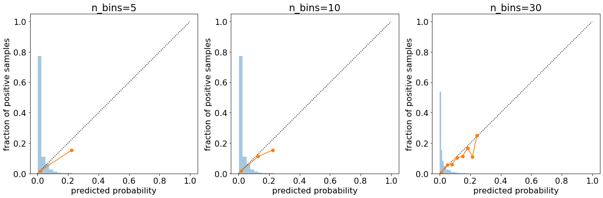
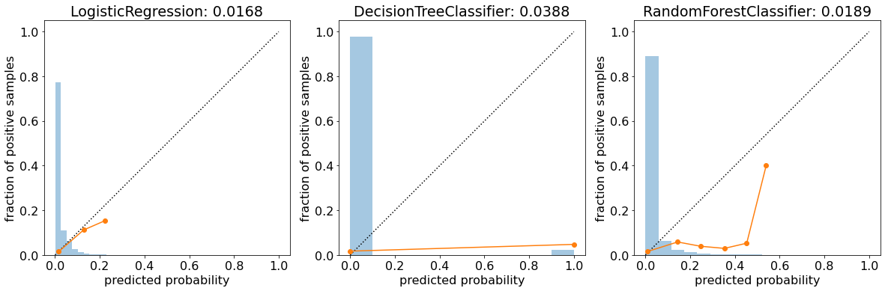
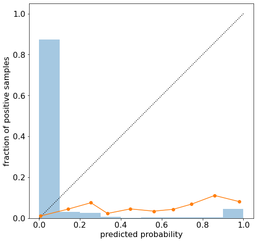
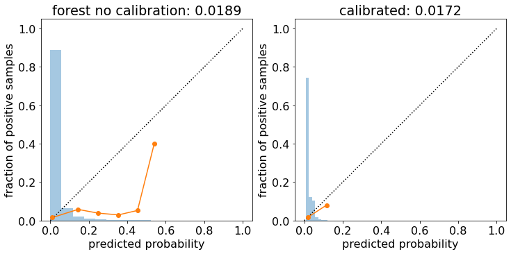
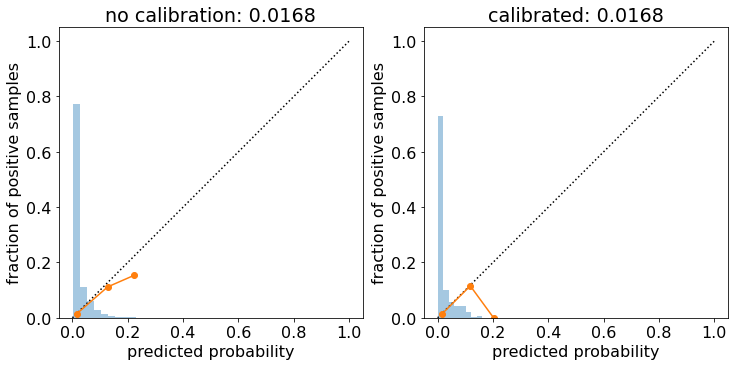

#code adapted from https://github.com/thomasjpfan/ml-workshop-intermediate-1-of-2import numpy as np
import pandas as pd
import matplotlib.pyplot as plt
import sklearn
plt.rcParams['font.size'] = 16
plt.rcParams['figure.figsize'] = [12, 8]
plt.rcParams['savefig.bbox'] = 'tight'
plt.rcParams["savefig.dpi"] = 300
sklearn.set_config(display='diagram')def plot_calibration_curve(y_true, y_prob, n_bins=5, ax=None, hist=True, normalize=False):
prob_true, prob_pred = calibration_curve(y_true, y_prob, n_bins=n_bins, normalize=normalize)
if ax is None:
ax = plt.gca()
if hist:
ax.hist(y_prob, weights=np.ones_like(y_prob) / len(y_prob), alpha=.4,
bins=np.maximum(10, n_bins))
ax.plot([0, 1], [0, 1], ':', c='k')
curve = ax.plot(prob_pred, prob_true, marker="o")
ax.set_xlabel("predicted probability")
ax.set_ylabel("fraction of positive samples")
ax.set(aspect='equal')
return curveCreate dummy dataset
# %load solutions/classifier_example.py
from sklearn.preprocessing import StandardScaler
from sklearn.linear_model import LogisticRegression
from sklearn.pipeline import Pipeline
from sklearn.model_selection import train_test_split
url = 'https://raw.githubusercontent.com/davidrkearney/colab-notebooks/main/datasets/strokes_training.csv'
df = pd.read_csv(url, error_bad_lines=False)
df
df=df.dropna()
df.isnull().sum()
df.columns
sklearn.set_config(display='diagram')
X, y = df.drop(['stroke', 'id'], axis = 1), df['stroke']
X = X.select_dtypes(include='number')
X
X_train, X_test, y_train, y_test = train_test_split(X, y, random_state=42)
from sklearn.ensemble import RandomForestClassifier
from sklearn.metrics import classification_report
rf = RandomForestClassifier(random_state=42)
rf.fit(X_train, y_train)
rf.score(X_test, y_test)
y_pred = rf.predict(X_test)
print(classification_report(y_test, y_pred)) precision recall f1-score support
0 0.98 1.00 0.99 7139
1 0.17 0.01 0.01 129
accuracy 0.98 7268
macro avg 0.57 0.50 0.50 7268
weighted avg 0.97 0.98 0.97 7268
from sklearn.preprocessing import StandardScaler
from sklearn.linear_model import LogisticRegression
from sklearn.pipeline import Pipeline
from sklearn.model_selection import train_test_split
url = 'https://raw.githubusercontent.com/davidrkearney/colab-notebooks/main/datasets/strokes_training.csv'
df = pd.read_csv(url, error_bad_lines=False)
df
df=df.dropna()
df.isnull().sum()
df.columns
sklearn.set_config(display='diagram')
X, y = df.drop(['stroke', 'id'], axis = 1), df['stroke']
X = X.select_dtypes(include='number')
X
X_train, X_test, y_train, y_test = train_test_split(X, y, random_state=42)Train linear model
from sklearn.linear_model import LogisticRegression
from sklearn.pipeline import make_pipeline
from sklearn.preprocessing import StandardScaler
lr = make_pipeline(StandardScaler(), LogisticRegression(random_state=42))
lr.fit(X_train, y_train)Pipeline(steps=[('standardscaler', StandardScaler()),
('logisticregression', LogisticRegression(random_state=42))])StandardScaler()
LogisticRegression(random_state=42)
Calibration curve
from sklearn.calibration import calibration_curvelr_proba = lr.predict_proba(X_test)prob_true, prod_pred = calibration_curve(y_test, lr_proba[:, 1], n_bins=5)
print(prob_true)
print(prod_pred)[0.01750517 0.15384615]
[0.01906858 0.22387283]plot_calibration_curve(y_test, lr_proba[:, 1]);
from sklearn.metrics import brier_score_losslr_brier = brier_score_loss(y_test, lr_proba[:, 1])fig, (ax1, ax2, ax3) = plt.subplots(1, 3, figsize=(20, 8))
plot_calibration_curve(y_test, lr_proba[:, 1], n_bins=5, ax=ax1)
ax1.set_title("n_bins=5")
plot_calibration_curve(y_test, lr_proba[:, 1], n_bins=10, ax=ax2)
ax2.set_title("n_bins=10")
plot_calibration_curve(y_test, lr_proba[:, 1], n_bins=30, ax=ax3)
ax3.set_title("n_bins=30")Text(0.5, 1.0, 'n_bins=30')
Train Random Forest
from sklearn.ensemble import RandomForestClassifierrf = RandomForestClassifier(random_state=0)
rf.fit(X_train, y_train)RandomForestClassifier(random_state=0)
rf_proba = rf.predict_proba(X_test)rf_brier = brier_score_loss(y_test, rf_proba[:, 1])
rf_brier0.0188862960924601Train Single Tree
from sklearn.tree import DecisionTreeClassifiertree = DecisionTreeClassifier(random_state=0)
tree.fit(X_train, y_train)DecisionTreeClassifier(random_state=0)
tree_proba = tree.predict_proba(X_test)tree_brier = brier_score_loss(y_test, tree_proba[:, 1])
tree_brier0.03880022014309301fig, (ax1, ax2, ax3) = plt.subplots(1, 3, figsize=(20, 8))
plot_calibration_curve(y_test, lr_proba[:, 1], n_bins=10, ax=ax1)
ax1.set_title(f"LogisticRegression: {lr_brier:0.4f}")
plot_calibration_curve(y_test, tree_proba[:, 1], n_bins=10, ax=ax2)
ax2.set_title(f"DecisionTreeClassifier: {tree_brier:0.4f}")
plot_calibration_curve(y_test, rf_proba[:, 1], n_bins=10, ax=ax3)
ax3.set_title(f"RandomForestClassifier: {rf_brier:0.4f}");
Exercise 1
- Train a
sklearn.naive_bayes.GaussianNBon the training set. - Compute the brier score loss on the test set for the
GuassianNB. - Plot the calibration curve with
n_bins=10.
# %load solutions/02-ex01-solutions.py
from sklearn.naive_bayes import GaussianNB
nb = GaussianNB().fit(X_train, y_train)
nb_proba = nb.predict_proba(X_test)
brier_score_loss(y_test, nb_proba[:, 1])
plot_calibration_curve(y_test, nb_proba[:, 1], n_bins=10)
Calibration
from sklearn.calibration import CalibratedClassifierCVrf = RandomForestClassifier(random_state=0)
cal_rf = CalibratedClassifierCV(rf, method="isotonic")
cal_rf.fit(X_train, y_train)CalibratedClassifierCV(base_estimator=RandomForestClassifier(random_state=0),
method='isotonic')RandomForestClassifier(random_state=0)
cal_rf_proba = cal_rf.predict_proba(X_test)cal_rf_brier = brier_score_loss(y_test, cal_rf_proba[:, 1])fig, (ax1, ax2) = plt.subplots(1, 2)
plot_calibration_curve(y_test, rf_proba[:, 1], ax=ax1, n_bins=10)
ax1.set_title(f"forest no calibration: {rf_brier:0.4f}")
plot_calibration_curve(y_test, cal_rf_proba[:, 1], ax=ax2, n_bins=10)
ax2.set_title(f"calibrated: {cal_rf_brier:0.4f}");
Calibrating the linear model
lr = make_pipeline(StandardScaler(), LogisticRegression(random_state=42))
cal_lr = CalibratedClassifierCV(lr, method='isotonic')
cal_lr.fit(X_train, y_train)CalibratedClassifierCV(base_estimator=Pipeline(steps=[('standardscaler',
StandardScaler()),
('logisticregression',
LogisticRegression(random_state=42))]),
method='isotonic')StandardScaler()
LogisticRegression(random_state=42)
cal_lr_proba = cal_lr.predict_proba(X_test)
cal_lr_brier = brier_score_loss(y_test, cal_lr_proba[:, 1])fig, (ax1, ax2) = plt.subplots(1, 2)
plot_calibration_curve(y_test, lr_proba[:, 1], ax=ax1, n_bins=10)
ax1.set_title(f"no calibration: {lr_brier:0.4f}")
plot_calibration_curve(y_test, cal_lr_proba[:, 1], ax=ax2, n_bins=10)
ax2.set_title(f"calibrated: {cal_lr_brier:0.4f}");